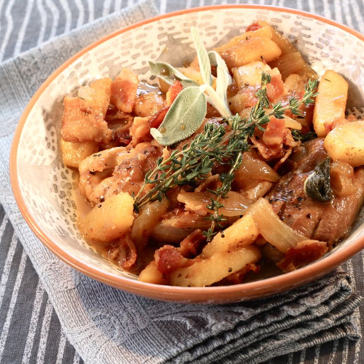

Skillet Apple Cider Chicken

Description:
This skillet apple cider chicken is a great fall recipe. Serve it with egg noodles.
Ingredients
- 6 skinless, boneless chicken thighs
- 1 teaspoon salt
- 2 tablespoons olive oil
- 6 strips bacon
- 1 onion, sliced
- 2 cups chicken broth, divided
- 2 cups apple cider, divided
- 2 apples, peeled, cored, and sliced
- 4 sage leaves
- 2 sprigs fresh thyme
- 4 tablespoons unsalted butter
Cooking Steps
- Season chicken thighs with salt; set aside.
- Heat oil in a large skillet over medium heat. Add thighs; cook until browned on both sides, 7 to 10 minutes. Transfer to a plate; set aside.
- Cook bacon in the skillet over medium-high heat, turning occasionally, until evenly browned, about 10 minutes. Drain on paper towels; drain excess grease from the skillet.
- Cook onion in the skillet over medium heat until soft, 5 to 7 minutes. Add 1 cup chicken broth and 1 cup apple cider; cook until reduced by half, about 10 minutes. Add cooked bacon, apples, sage, and thyme; simmer for 2 minutes. Add remaining 1 cup each chicken broth and apple cider.
- Return chicken thighs to the skillet; reduce heat to medium-low. Cook and stir until thighs are no longer pink in the centers, about 15 minutes.
- Return chicken thighs to the skillet; reduce heat to medium-low. Cook and stir until thighs are no longer pink in the centers, about 15 minutes.
back